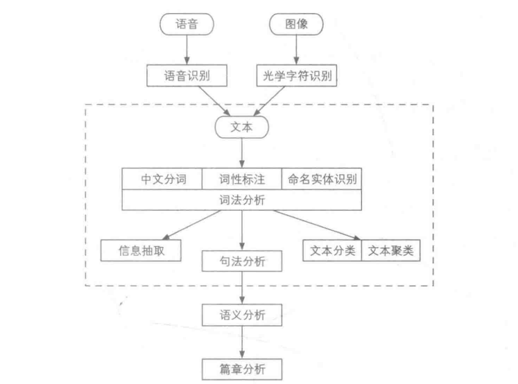

输入源一般是语音，文本和图像，语音和图像一般通过语音识别和光学字符识别转换为文本，这一步称为文本处理。
词法分析一般有分词，词性标注和命名实体识别三个步骤，分词是将文本分隔为有意义的词汇，再通过词性标注确定词语类别并消除歧义，再通过命名实体识别标出较长的专有名词。
信息抽取，在词法分析厚，文本已经部分结构化，单词附有词性和其他标签。此时我们可以抽取出一些关键词和句子。
文本分类和聚类，把文档分门别类，不同的分开，相同的归在一起。
句法分析，根据词语在句子中的作用把词语连成句子。
下面给出一个预测中国人姓名的例子。
$f(x)=w·x+b$，对于中国人姓名，姓氏与性别无关，所以我们应该先抽取出名字。通过日常生活我们得知，一些字是男性常用，例如强、壮。另一些字是女性常用，例如雪，冰，还有男女通用的，例如文。而字对于性别的影响程度是不一样的，例如壮和雪同时出现，壮对于性别推测的优先度应该更大。我们需要定义一系列特征，让算法自动决定权重，我们把这些特征数值化，称为特征提取。
以“沈壮雪”为例，首先，去掉姓氏，提取“壮雪”，设定壮的特征值为2，雪为-1。则这个名字的权重向量就可以用二维向量表示成w =[2,-1]。名字就表示为x=[1,1]，则输出：$f(x) = w^Tx+b = [2,-1][1,1]^T + 0$，根据结果是否大于0为男性。
在工程上，我们可以直接定义一套模板来提取特征。例如name是一个字符串，我们可以定义特征为name[1]+name[2]。设计特征模板则成为特征工程。
让机器自己学习，我们需要一本习题集，这个习题集就是数据集，在NLP中叫做语料库。
监督学习，指的是你的数据库有准确的标准答案，类似于带答案的习题册，机器先自己学习，之后对答案，纠正模型的错误。回到上面的例子，姓名特征模板如果出现性别预测失误，例如沈壮雪其实是个女的，那么在名字的权重向量中，就可以增大“雪”这个字的权重，如作$w^T=[2,-1] -> w^T=[2,-3]$，这样$f(x) = w^Tx+b = [2,-3][1,1]^T + 0 = -1$,特征模板就纠正了这个错误。如果往复，男性常用字的权重增大，女性的减少。这个学习过程就成为训练，运用的数据集就叫训练集。总结这个例子的过程：我们先把人名这样的非结构化数据进行人工标注，成为后续使用的训练集，之后把数据拿去训练得到一个模型，最后利用这个模型进行预测。
无监督学习，就是训练集不含标准答案，称作无标注，一般用于聚类和降维。降维指的是将样本从高维变换到低维。以名字为例，名字的特征数量非常多，如果有n个特征，那么样本就是n+1维空间中的一个点，为了可视化，必须降到二维和三维，降维的时候尽量不损失信息，让样本的每个维度方差尽量大。
半监督学习，是我们训练多个模型，对同一个实例进行预测，如果得到的结果多数一致，就把这个结果加入训练集用于扩充。
强化学习，一边预测，一边根据反馈策划下次决策。适用于人机交互问题。